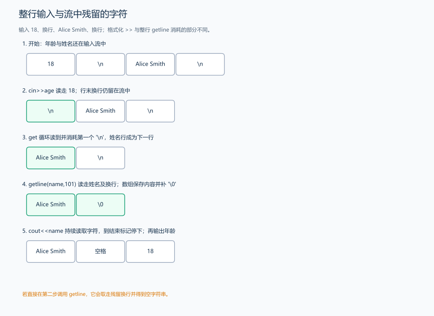
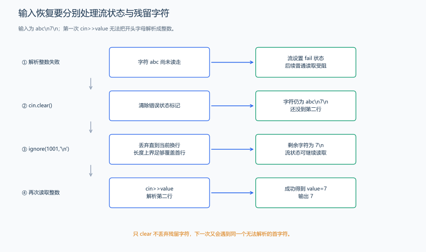
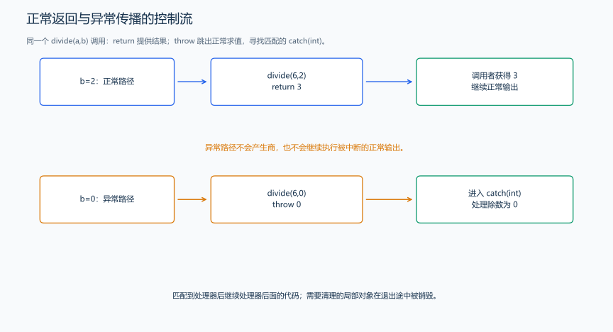

（十） 输入细节、文件与异常
如果先输入年龄，再读取下一行的姓名，为什么直接读整行会得到空行？原因在于：格式化读取整数后，行末换行还留在输入流里。先用已经学过的 char 数组观察输入流中还剩什么。
1. 整行读取与残留换行
题目原文（自拟）： 第一行输入一个 int 年龄，第二行输入至多 100 个英文字符组成的姓名，允许空格和空行。输出完整姓名、一个空格和年龄。

#include <iostream>
using namespace std;
int main() {
int age;
if (!(cin >> age))
return 0; // 先确认整数读取成功。
char ch;
while (cin.get(ch) && ch != '\n') {
} // 按字符消耗本行余下内容，含换行。
char name[101]{}; // 最多 100 个内容字符，另留一格给结尾的 '\0'。
cin.getline(name, 101); // 把下一整行写入已有字符数组，并结束于 '\0'。
cout << name << ' ' << age << '\n';
}输入：
18
Alice Smith输出：
Alice Smith 18cin.get(ch) 读取一个字符，不跳过空白；cin.getline(name,101) 接收字符数组和容量，读取一行、取走换行，但不把换行写入数组。C 风格字符串以 \0 标记结束，cout 输出 name 时读到该标记停止。100 个内容字符加上结尾的 \0，共需要 101 个槽位，所以声明 char name[101] 并传入容量 101。文本超过容量时，getline 会设置失败状态。
cin >> ws 跳过接下来的空白字符与空行；直接调用 getline 则从当前位置读取这一行，保留开头空白。学过 string 后，还会用它读取并保存整行文本。
2. 把输入来源换成文件
<fstream> 提供文件流，读取整数仍可使用已学的 >>。下面是一个无需标准输入的演示：同目录的 data.txt 保存 1 2 3，程序输出其总和 6。
#include <fstream>
#include <iostream>
using namespace std;
int main() {
ifstream input("data.txt"); // 尝试打开名为 data.txt 的文件用于读取。
if (!input) {
cerr << "文件打开失败\n"; // cerr 用于诊断输出，不是题目要求的答案。
return 1;
}
long long total = 0;
int value;
while (input >> value)
total += value; // 与 cin 相同，读取失败时退出。
cout << total << '\n';
}ifstream 用于读文件，ofstream 用于写文件，销毁时自动关闭。ofstream output("result.txt"); 默认可能覆盖旧文件，ofstream output("result.txt",ios::app); 以追加方式写到末尾；选模式前先确定要保留哪些内容。竞赛评测通常读 cin、写 cout，文件演示用于理解输入输出对象。
3. 异常的抛出与捕获
除法要求除数不为 0。函数发现除数为 0 时，可以抛出异常，把错误交给调用者处理。下面抛出整数 0，外层用 catch 接住它，观察程序从计算路径转到错误处理路径。
#include <iostream>
using namespace std;
int divide(int a, int b) {
if (b == 0)
throw b; // 抛出整数 0，立即离开正常计算路径。
return a / b; // 本演示仅使用 10 与 2，结果在 int 范围内。
}
int main() {
try {
cout << divide(10, 2) << '\n';
cout << divide(10, 0) << '\n'; // 此次调用抛出异常，不会输出商。
} catch (int divisor) {
cout << "invalid divisor: " << divisor << '\n'; // 接收并处理抛出的整数。
}
}输出为 5、invalid divisor: 0，各占一行。try 包住可能失败的操作，throw 交出失败信息，匹配的 catch 处理它；并不是所有错误都会自动抛异常。原生数组越界、悬空指针等错误仍要事先避免。后面遇到标准异常类型时，再解释其头文件、错误信息和捕获方式。
4. 读取失败后：先清状态，再处理残留数据
cin>>value 不只是取出字符，还会记录输入状态。逻辑判断 if(cin>>value) 表示这次提取有没有成功；eof 表示检测到输入末尾，fail 表示格式化读取等操作失败，bad 表示更严重的流故障。EOF 不是一个给普通整数自动赋入的数值。
题目原文（自拟演示）： 输入两行。第一行长度至多 1000，首字符是英文字母，不能解析为整数；第二行是一个合法的 int。第一次解析失败后输出 INVALID，恢复输入并丢弃第一行剩余内容，再输出第二行的整数。

#include <iostream>
using namespace std;
int main() {
int value = 0;
if (!(cin >> value)) {
cout << "INVALID\n"; // 演示题要求报告第一次失败。
cin.clear(); // 重置失败状态；它不删除还没读走的错误字符。
cin.ignore(1001, '\n'); // 至多丢弃 1001 个字符，包含遇到的换行。
}
if (cin >> value) {
cout << value << '\n'; // 第二行读入成功后，输出这次得到的整数。
}
}输入为 abc、7，各占一行，输出为 INVALID、7。只 clear 而不丢弃错误字符，下一次仍会尝试读取同一个 a，再次失败；只 ignore 而不先 clear，在失败状态下也不能完成预期提取。首行至多 1000 个字符，再加一个换行，所以 ignore 的最大数量设为 1001，恰好能丢弃完整的这一行。
竞赛中通常将“读入一组成功”放进循环条件：读到数据就处理，输入结束就退出。上面的 clear 与 ignore 用来演示格式错误后的恢复；EOF 已表示数据结束，读到 EOF 后直接结束读取。
5. scanf、printf 的格式化输入输出
<cstdio> 提供 C 风格输入输出。scanf 根据格式字符串把结果写到给定地址，printf 根据格式说明读取参数值；这与流的 >>、<< 是另一套接口。指针章节已经解释 &x，这里它表示 scanf 将写入的变量地址。
| 类型或格式 | scanf 输入 | printf 输出 |
|---|---|---|
| int | %d 与 int* |
%d 与 int |
| long long | %lld 与 long long* |
%lld 与 long long |
| double | %lf 与 double* |
%f；%.2f 输出两位小数 |
| char | %c 与 char* |
%c 与字符值 |
题目原文（自拟）： 输入一个 int、一个 long long、一个 double 和一个英文字符，按同样顺序输出一行；double 保留两位小数，字段间一个空格。
#include <cstdio>
int main() {
int number;
long long total;
double ratio;
char grade;
if (std::scanf("%d%lld%lf %c", &number, &total, &ratio, &grade) != 4) {
return 0; // 返回值表示成功赋值的项目数；本例要求四项都读到。
}
std::printf("%d %lld %.2f %c\n", number, total, ratio, grade); // 输出传值，不传地址。
}输入 7 10000000000 2.5 A，输出 7 10000000000 2.50 A。数值格式会跳过开头空白，%c 本身不跳过，所以在它前面放空白以消耗分隔符。用 C 风格字符串数组接收 %s 时要按容量限制宽度，不能任意长度写入已有数组。
scanf 把数据写入所传地址，printf 读取传入的值。使用序言中的整数宏后，int 会替换为 long long，读取格式相应写成 %lld。这个程序使用 scanf、printf 完成输入输出，使用 cin、cout 的程序则按序言设置标准流加速。
6. throw 与 return 走的是不同路径

对应前面的 divide 演示，return a/b 返回一个结果，调用者继续正常输出；throw b 则中断这次正常求值，寻找外层匹配的 catch。传入除数 0 时，调用后的那次输出不会得到一个“默认商”，而是转到 catch(int divisor) 输出错误信息。
抛出异常会使离开的作用域按规则清理已构造的局部对象，这称为栈展开；面向对象部分会把它与析构、资源管理连接。return 处理正常结果，异常处理失败路径，数组越界等错误并不自动成为可捕获异常。